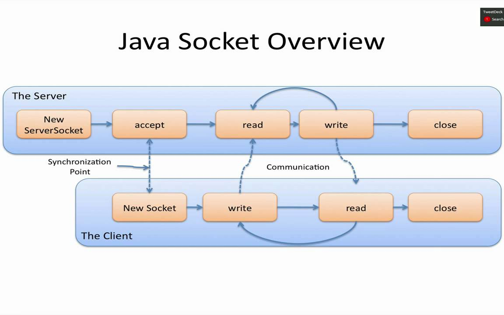

Mục tiêu
Bài đầu tiên đặt nền móng cho đồ án blog cá nhân: khởi tạo dự án tĩnh, tổ chức cấu trúc thư mục chuẩn, đẩy mã nguồn lên GitHub và cấu hình GitHub Pages để xuất bản website. Đây là nền tảng để các bài tiếp theo tập trung vào giao diện, nội dung, tối ưu và triển khai.
Cấu trúc thư mục gợi ý
blog/
├─ index.html # Trang Home
├─ blog.html # Trang liệt kê bài viết
├─ posts/ # Thư mục bài viết chi tiết
│ ├─ post-1.html ... post-9.html
├─ css/
│ └─ style.css # CSS chính
├─ js/
│ └─ main.js # JS cơ bản (tuỳ chọn)
└─ images/
└─ post-*.jpg # Hình minh họa
Khởi tạo Git & đẩy lên GitHub
git init
git add .
git commit -m "Init blog project"
git branch -M main
git remote add origin https://github.com/<username>/<repo>.git
git push -u origin main
Bật GitHub Pages
- Vào Settings → Pages
- Build and deployment → Source: “Deploy from a branch”
- Branch: main, Folder: /(root) → Save
- Đợi 1–3 phút, thử truy cập URL được cấp
Kiểm tra index.html
Đảm bảo file index.html nằm ở thư mục gốc hoặc đúng “Folder” bạn đã chọn.